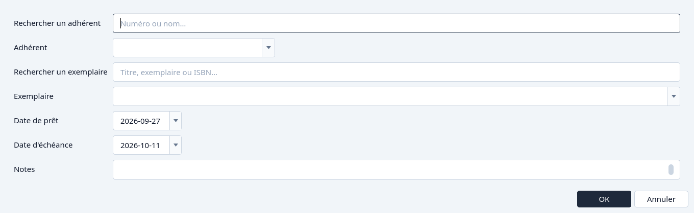
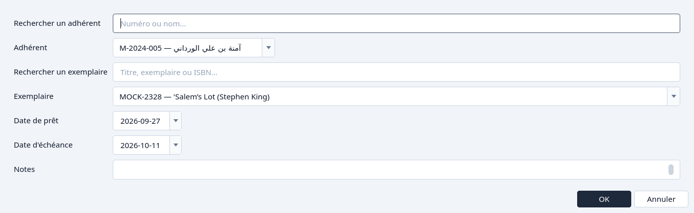
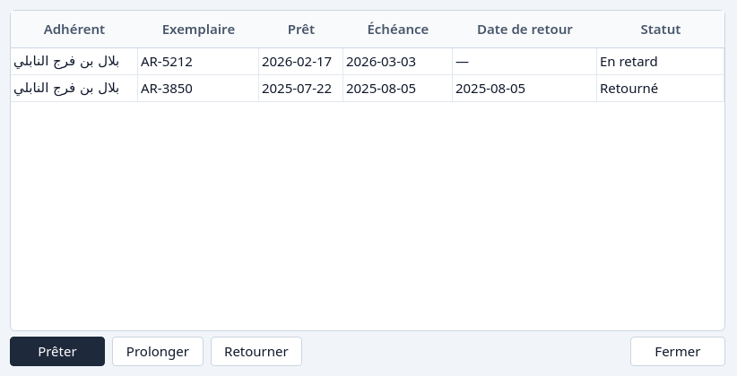
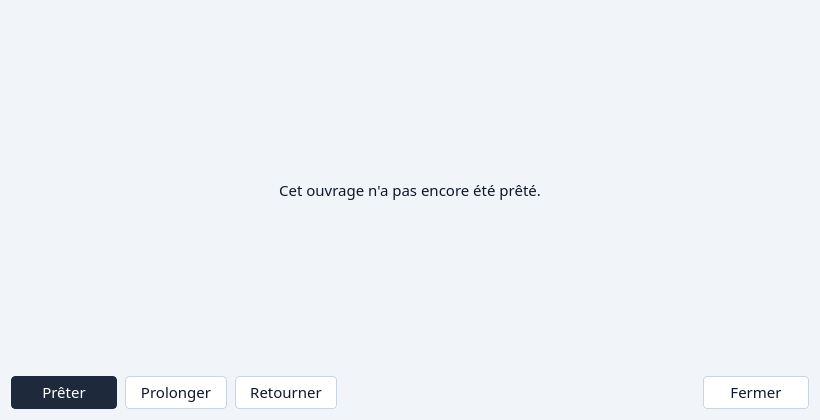
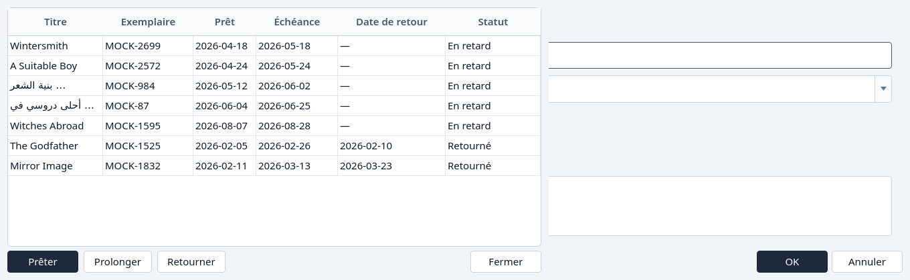

Prêter un ouvrage
Faire sortir un exemplaire depuis la Circulation, depuis un titre ou depuis un adhérent.
Seul un adhérent Actif est proposé, et seul un exemplaire qui est sur le rayon. Le jour dû commence à 14 jours après le jour où l'exemplaire sort. Vous pouvez le changer avant OK. Voir Statut d'un adhérent et États d'un prêt.
Depuis la Circulation
Cliquez Prêter.
La fenêtre demande un adhérent et un exemplaire. Cherchez dans l'une ou l'autre liste si elle est longue.

Prêter, avant qu'un adhérent et un exemplaire soient choisis. Choisissez l'adhérent et l'exemplaire, puis OK.

Un adhérent et un exemplaire choisis. Annuler laisse la Circulation inchangée.


Depuis les prêts d'un ouvrage
Dans le Catalogue, surlignez le titre et cliquez Prêts. Prêter est là même quand le titre n'a jamais été emprunté. La liste d'exemplaires est seulement celle de ce titre, et il n'y a pas de recherche d'exemplaire.
Cliquez Prêter dans la fenêtre des prêts.

Prêter depuis un titre. La liste d'exemplaires est ce titre seul.



Choisissez l'adhérent, confirmez l'exemplaire, et cliquez OK. Fermer quitte l'historique.
Depuis les prêts d'un adhérent
Dans les Adhérents, surlignez l'adhérent et cliquez Prêts, puis Prêter. L'adhérent est montré comme un nom, pas comme une recherche. Vous choisissez l'exemplaire.


Et si…
- Aucun exemplaire de ce titre n'est sur le rayon. La liste d'exemplaires le dit, et OK reste indisponible.
- L'adhérent est Inactif. Il n'est pas dans la liste des adhérents. Renouvelez-le d'abord. Voir Inscrire un adhérent.
- Le jour dû est avant le jour où l'exemplaire sort. La fenêtre le refuse.